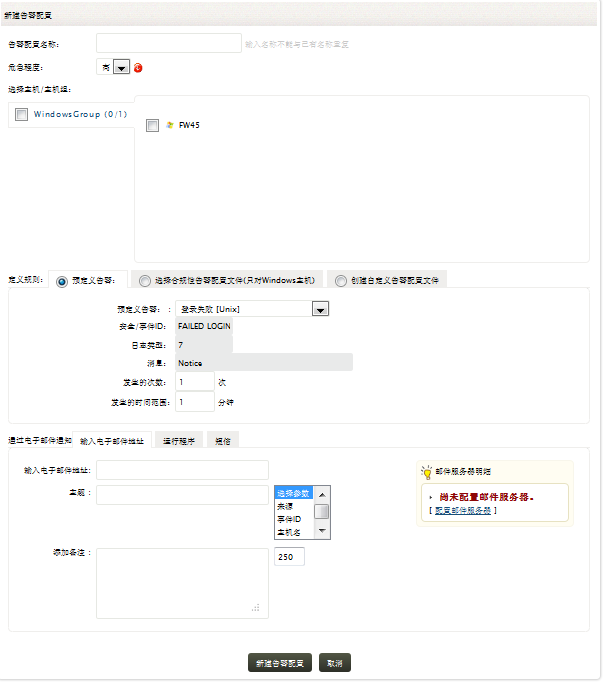
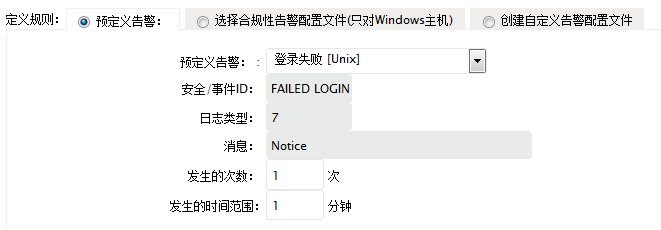
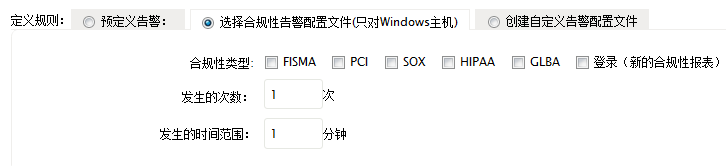
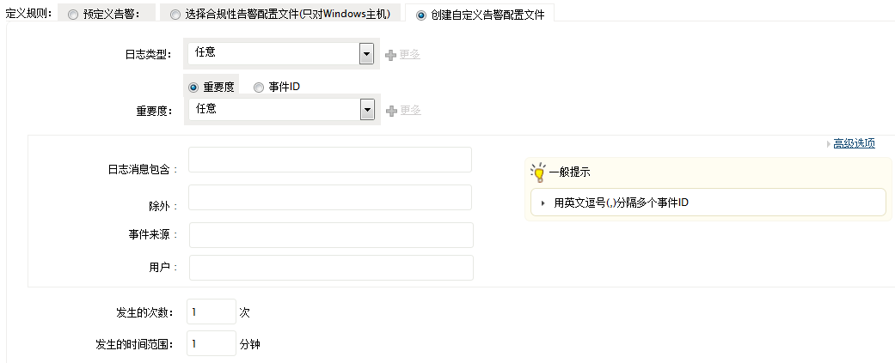
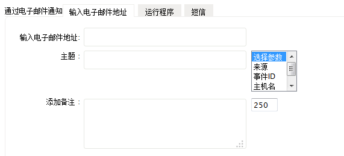
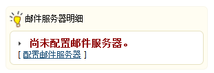
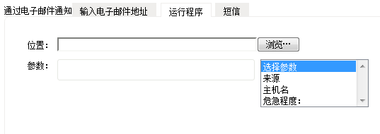
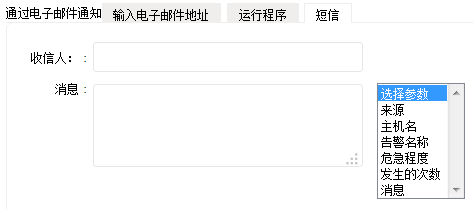
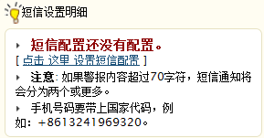

怎样创建告警配置文件
要在用户界面创建告警配置文件，可通过以下菜单实现：
- 告警页签 > 告警配置文件 > +
- 标签：+添加 > 告警
- 设置页签 > 告警 > 添加
请参阅下面的步骤来创建告警配置文件。

-
输入告警配置文件的名称。
指定此报表配置文件生成的告警的严重性级别，可选项包括高、中和低。
-
选择要生成告警的主机和主机组。
-
使用预设的告警条件来快速配置告警。如果您的告警需求不在预设的条件中，请使用自定义告警条件。如果您有合规性告警需求，那么请使用合规性告警条件进行设置。
预定义告警

- 选择预定义告警来定义告警条件。
- 选择一个预定义的告警条目。
- 当选择了一个预定义的告警条目后，这里将会将会自动填充对应的安全/事件ID、日志类型和消息，且这些字段不可编辑，这样可以快速创建告警配置文件。
-
您可以控制告警的生成，将出现一次事件生成一次告警配置为，在特定时间段内出现N次事件生成一次告警。您需要设置事件出现的次数，以及事件出现的时间限制。
合规性告警

-
选择合规性告警设置。
-
当选择和合规性告警设置之后，下面将会列出支持的合规性列表，它们是FISMA、PCI、HIPAA、SOX和GLBA。
-
您可以控制告警的生成，将出现一次事件生成一次告警配置为，在特定时间段内出现N次事件生成一次告警。您需要设置事件出现的次数，以及事件出现的时间限制。
自定义告警

-
选择自定义告警设置。
-
从列表中选择日志的类型，缺省值为任意。如果要选择多个日志类型，可以使用+
更多链接，告警将会在出现此类型时生成。
-
从列表中选择重要度，缺省值为任意。 如果要选择多个重要度，可以使用+
更多链接，告警将会在出现此重要度时生成。如果选择了事件ID，请输入事件ID，或使用事件ID来选择指定消息的事件ID。
-
使用日志消息包含字段定义在日志消息中出现指定的词组或短语时，触发告警，使用除外字段定义当日志消息中存在指定的词组或短语时，不触发告警。
-
对于以上两种字段，在高级设置下，您可以配置对于多个字段的匹配选项设置。
-
您可以控制告警的生成，将出现一次事件生成一次告警配置为，在特定时间段内出现N次事件生成一次告警。您需要设置事件出现的次数，以及事件出现的时间限制。
- 生成的告警可以通过邮件、短信进行通知，也可以通过运行程序，在生成告警时执行一个脚本或程序。设置告警通知选项。
设置通过邮件发送告警通知
输入邮件发送告警通知的明细信息。

-
输入邮件的地址。多个邮件地址请使用逗号隔开（,）。
-
输入邮件通知的主题，您可以将告警参数附加到主题行。请从旁边的参数列中选择参数。
-
您可以为邮件通知添加备注信息，最大字节数限制为250个字符，这个信息将会附加到邮件通知的内容中。

如果在EventLog Analyzer中尚未配置邮件服务器，当选择了通过邮件发送通知选项时，您会看到邮件配置的提醒信息。
设置通过运行程序通知告警
输入运行脚本或程序的明细信息。

-
输入EventLog Analyzer客户端机器中脚本文件的路径和名称，或者通过浏览按钮选择脚本文件。
-
设置要传送到脚本的告警参数，从列表中选择需要的参数。您可以选择的参数包括告警的来源、主机名和重要度
设置通过短信通知告警
输入短信的明细信息。

-
输入接收短信通知的移动电话号码。
-
输入短信通知的消息内容，您也可以将告警参数附加到这里。请从旁边的列表中选择要附加的参数。

如果在EventLog Analyzer中尚未配置短信设置，当选择了通过短信通知选项时，您会看到配置短信的提醒信息。
- 点击添加告警配置文件按钮完成告警配置文件的创建，所有创建的告警配置文件将会列在告警配置文件明细页面，在那里您可以启用、禁用、修改和删除配置文件。
|